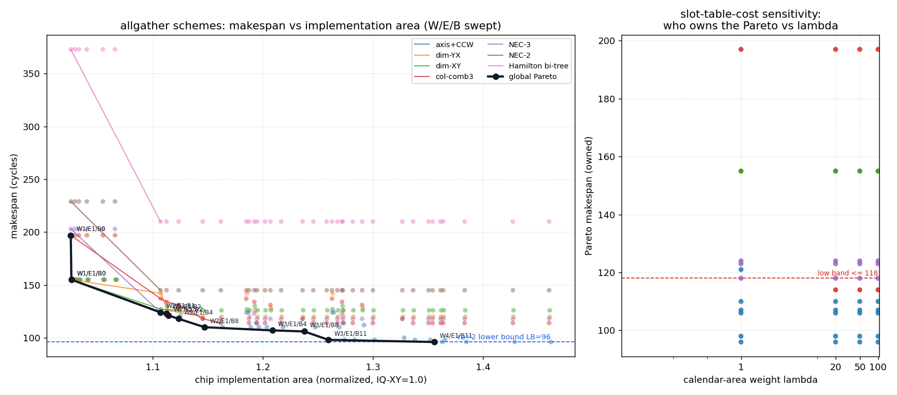
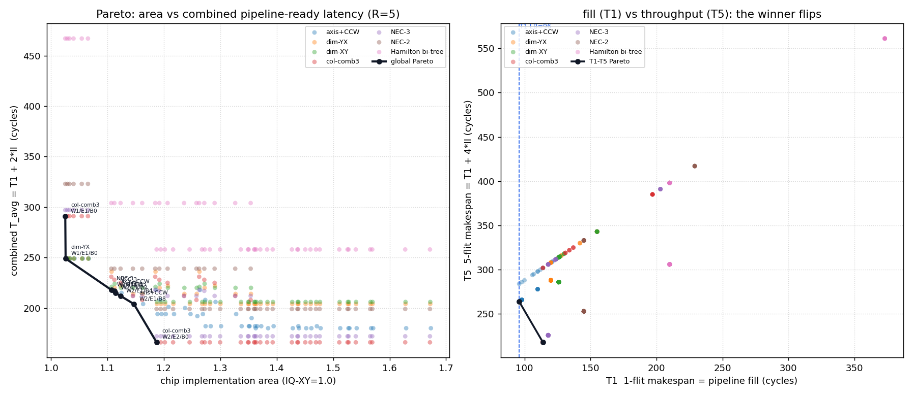

Allgather 多方案：makespan × 芯片实现面积 Pareto
8×6 mesh · H=7 · V=9 · 方案 axis+CCW / dim-XY / dim-YX / col-comb3 / NEC-3 / NEC-2 / Hamilton-bi ·
每方案扫 W/E/B eject 通路变量 · 259 个设计点 · 含多 flit（R=5）流水 Pareto（§5） ·
数据 multi_area_makespan.json / multiflit_area_makespan.json · 生成 2026-07-16T11:44:45.981684+00:00
核心结论
96makespan 下限（仅 axis 可达）
[96, 114)axis+CCW 独占的低时延区间
5触及全局 Pareto 的方案数
≤2%非 axis 方案的最大面积优势
- 低时延区（96–113 cy）由 axis+CCW 独占：其余方案的 makespan 结构性地下不去
（floor：col-comb3 114、NEC-3 118、dim-YX 120、dim-XY 126、NEC-2 145、Hamilton 210），
再大 eject 带宽/buffer 也无法进入该区。
- 其他方案只在中/高 makespan 段触及 Pareto，且面积优势极小：低 Pmax（3–5）带来的时隙表面积节省
只有 ~0.1–0.2%（NEC-3 在 118 cy 处最多省约 2%）。因为归一化面积里时隙表/日历项本就很小
（~0.002），远小于 eject 通路（W/E/B）的 0.08–0.36。
- 实用结论：要低 makespan 选 axis+CCW；只有在无法承担宽 crossbar eject（大 W）时，
才用 NEC-3 换到 ~118 cy 的更省 eject 档（省的是 W 带宽，不是时隙表面积）。
- dim-XY/dim-YX/col-comb3 仅在最廉价角（W1/E1/B0）以 ~0.1% 面积差挂到 Pareto，工程上可忽略。
1. 散点图与 Pareto 前沿

细线=各方案自身前沿；黑线=全局 Pareto；蓝虚线=rb=2 下限 96。
每点一个 (scheme,W,E,B)。axis 曲线整体压在其他方案左下方（更低 makespan / 相近面积）。
2. 各方案特征与 makespan 地板
| 方案 | Pmax | issue | 树 dilation |
makespan 地板* | 地板处面积 | 触及全局Pareto |
|---|
| axis+CCW | 15 | 2 | 96 | 96 | 1.3556 | 是 |
| dim-YX | 5 | 2 | 96 | 120 | 1.1459 | 是 |
| dim-XY | 5 | 2 | 96 | 126 | 1.1240 | 是 |
| col-comb3 | 3 | 2 | 114 | 114 | 1.1618 | 是 |
| NEC-3 | 3 | 2 | 117 | 118 | 1.1235 | 是 |
| NEC-2 | 3 | 2 | 145 | 145 | 1.1070 | 否 |
| Hamilton bi-tree | 3 | 2 | 210 | 210 | 1.1070 | 否 |
* 地板 = 在最大 eject 配置（W=4,E=1,B=11 等）下可达的最低 makespan；受树结构/链路拥塞限制。
面积 = 1.0 核 + 时隙表(Pmax,issue) + CalFork 多播(0.025) + eject(W,E,B) 增量。
3. 全局 Pareto 前沿明细
| 面积(归一) | makespan | 方案 | eject 配置 W/E/B |
|---|
| 1.0255 | 197 | col-comb3 | W1/E1/B0 |
| 1.0261 | 155 | dim-YX | W1/E1/B0 |
| 1.0261 | 155 | dim-XY | W1/E1/B0 |
| 1.1070 | 124 | NEC-3 | W2/E1/B1 |
| 1.1125 | 123 | NEC-3 | W2/E1/B2 |
| 1.1142 | 121 | axis+CCW | W2/E1/B2 |
| 1.1235 | 118 | NEC-3 | W2/E1/B4 |
| 1.1470 | 110 | axis+CCW | W2/E1/B8 |
| 1.2084 | 107 | axis+CCW | W3/E1/B4 |
| 1.2376 | 106 | axis+CCW | W3/E1/B8 |
| 1.2595 | 98 | axis+CCW | W3/E1/B11 |
| 1.3556 | 96 | axis+CCW | W4/E1/B11 |
- 低 makespan 段（96–110）全部是 axis+CCW。
- 中段（118–124）出现 NEC-3 的几点：在这些 makespan 上它比同 makespan 的 axis 配置略省
（因 axis 达到相近 makespan 需要更大 W/B）。
- 最廉价角（155/197）是 dim / col-comb3：靠更浅时隙表省下 ~0.1% 面积，代价是大 makespan。
4. 时隙表成本敏感度（λ 视图）
若担心低 Pmax 的真实价值（控制复杂度/时序）被本模型低估，可把时隙表(日历)面积人为放大 λ 倍，
观察谁在何 makespan 段夺走 Pareto。axis+CCW 的 Pmax=15 最深，最先受惩罚。
| λ（时隙表面积倍数） | axis+CCW 独占的 makespan |
≤118 段的非axis占有者 | 各方案在 Pareto 上占有的 makespan |
|---|
| 1× | 96, 98, 106, 107, 110, 121 | NEC-3 | axis+CCW: [96, 98, 106, 107, 110, 121]; col-comb3: [197]; dim-XY: [155]; dim-YX: [155]; NEC-3: [118, 123, 124] |
| 20× | 96, 98, 106, 107, 110 | col-comb3, NEC-3 | axis+CCW: [96, 98, 106, 107, 110]; col-comb3: [114, 197]; dim-XY: [155]; dim-YX: [155]; NEC-3: [118, 123, 124] |
| 50× | 96, 98, 106, 107, 110 | col-comb3, NEC-3 | axis+CCW: [96, 98, 106, 107, 110]; col-comb3: [114, 197]; dim-XY: [155]; dim-YX: [155]; NEC-3: [118, 123, 124] |
| 100× | 96, 98, 106, 107, 110 | col-comb3, NEC-3 | axis+CCW: [96, 98, 106, 107, 110]; col-comb3: [114, 197]; dim-XY: [155]; dim-YX: [155]; NEC-3: [118, 123, 124] |
- axis+CCW 结构性锁定深时延段：即便 λ=100（时隙表面积×100），axis 仍独占
makespan ≤110 的所有 Pareto 点——低 Pmax 方案永远进不了低时延带。
- 非 axis 首次拿到 ≤118 点的最小 λ = 1.0
（NEC-3 @ 118 cy）：
即在标称成本（λ=1）下 NEC-3 就已在 118 cy 处 Pareto 最优；这属于 114–118 的“次低”段，并非深时延段。
- col-comb3（114 cy）需 λ≥20 才夺点：λ=1 时它虽在全局 Pareto 上，但只在高 makespan 处；
把 axis 的日历面积放大约 20× 后，axis 的 110 cy 配置面积才被 col-comb3 的 114 cy 反超。
- 含义：只有当你认定“深时隙表”的隐性代价 ≥ 标称面积的 20 倍时，低 Pmax 才在中时延段有意义；
对深时延段（≤110）则任何 λ 都改变不了结论。
5. 多 flit（R=5 轮）流水 Pareto：为什么要组合 1-flit 与 5-flit makespan
5.1 组合指标的动机
5-flit allgather 原则上是 5 轮 1-flit 方案，但第 k+1 个 flit 不必等第 k 个全部完成——只要
共享资源（链路、下 ramp 写 SRAM 带宽）空出来，就可尽早叠上去。因此有两个都重要、但侧重不同的时延：
- T1（1-flit makespan）= 流水“填充”时延：第一块数据多快就绪。
tile 编程可以在某个 1-flit allgather 一完成就立刻开始该 tile 的计算，做细粒度 comm/compute 流水。
所以 T1 决定计算流水何时能启动；对计算重的 tile，稳态各轮被计算掩盖，T1 是唯一暴露的通信项。
- T5（5-flit makespan）= 流水“吞吐”：T5 = T1 + (R−1)·II。对计算轻的 tile，
决定总时间的是每轮初始间隔 II（吞吐），而不是单轮时延。
细粒度流水每轮就绪一块、就绪即可算，因此真正该优化的是各轮平均就绪时延：
T_avg = (1/R) · Σ_{k=0..R−1} (T1 + k·II) = T1 + (R−1)/2 · II → R=5 时为 T1 + 2·II
II 的资源下界 = max( 链路复用次数 , ⌈(N−1)/E⌉ )
· 一条有向链路一轮被走 r 次 → 相邻轮在该链路上至少隔 r 拍；
· 每个 PE 每轮要把 N−1 个汇聚 flit 以 E flit/拍写入 gather SRAM → 相邻轮至少隔 ⌈(N−1)/E⌉ 拍。
T_avg 同时惩罚高填充时延（T1）和低吞吐（大 II），且与计算量无关（不假设 compute 开销），
是细粒度流水下最中立的单一指标。II 是资源下界，与 W/B 无关：突发 buffer B 与 crossbar 写宽 W
只帮助逼近该速率并决定 T1，无法突破 II。故 T5 为理想重叠下界。
5.2 Pareto 图

左：面积 × 组合指标 T_avg 的全局 Pareto；右：T1（填充）× T5（吞吐）散点——
可见最优方案发生翻转。
5.3 各方案的填充/吞吐地板
| 方案 | 链路复用 | T1 地板（填充） |
II 地板 | T5 地板（吞吐） | T_avg 地板 |
|---|
| col-comb3 | 26 | 114 | 26 | 218 | 166.0 |
| NEC-3 | 27 | 118 | 27 | 226 | 172.0 |
| NEC-2 | 27 | 145 | 27 | 253 | 199.0 |
| axis+CCW | 42 | 96 | 42 | 264 | 180.0 |
| dim-XY | 40 | 126 | 40 | 286 | 206.0 |
| dim-YX | 42 | 120 | 42 | 288 | 204.0 |
| Hamilton bi-tree | 24 | 210 | 24 | 306 | 258.0 |
II 地板 = 链路复用（在 E≥2 时链路复用是瓶颈；E=1 时 ⌈47/E⌉=47 反而更大，所有方案 II=47）。
Hamilton 复用最低（24）却因 T1 太差（填充 210）而 T5 被淘汰。
5.4 结论：填充冠军 ≠ 吞吐冠军
- axis+CCW 赢“填充”：T1=96（贴下限），但它把流量高度集中，
链路复用高达 42 → II 卡在 42 → T5=264。
- col-comb3 赢“吞吐”：链路复用只有 26，
II 更小 → T5=218（在所有方案中最低），代价是 T1 稍大。
- 因此 T1/T5 前沿由 axis+CCW（低 T1） 与 col-comb3（低 T5） 两端把持；
组合指标 T_avg 的 Pareto 则由 axis+CCW、col-comb3、dim-YX、NEC-3 共同占据。
- 吞吐要靠 E（写 SRAM 带宽）和“扁平/低复用”的树；填充要靠 axis 的短树 + 足够 W/B。
两者对硬件的诉求不同，这正是要用组合指标做 Pareto 的原因。
5.5 组合指标 T_avg 的全局 Pareto 明细
| 面积 | T_avg | T1 | II | T5 | 方案 | W/E/B |
|---|
| 1.0255 | 291.0 | 197 | 47 | 385 | col-comb3 | W1/E1/B0 |
| 1.0261 | 249.0 | 155 | 47 | 343 | dim-YX | W1/E1/B0 |
| 1.1070 | 218.0 | 124 | 47 | 312 | NEC-3 | W2/E1/B1 |
| 1.1125 | 217.0 | 123 | 47 | 311 | NEC-3 | W2/E1/B2 |
| 1.1142 | 215.0 | 121 | 47 | 309 | axis+CCW | W2/E1/B2 |
| 1.1235 | 212.0 | 118 | 47 | 306 | NEC-3 | W2/E1/B4 |
| 1.1470 | 204.0 | 110 | 47 | 298 | axis+CCW | W2/E1/B8 |
| 1.1873 | 166.0 | 114 | 26 | 218 | col-comb3 | W2/E2/B0 |
5.6 T1–T5（填充–吞吐）前沿明细
| T1 | T5 | II | 方案 | W/E/B |
|---|
| 96 | 264 | 42 | axis+CCW | W4/E2/B2 |
| 114 | 218 | 26 | col-comb3 | W2/E2/B0 |
6. 建议
- 贴下限 96：axis+CCW，W4/E1/B11（面积约 1.356）。唯一能到 96 的方案。
- 性价比区间（106–121 cy）：仍是 axis+CCW（W2–3/E1/B4–8）。
- eject 带宽受限（只能 W≤2）且可接受 ~118 cy：NEC-3（低 Pmax、窄 eject 即可）是更省 eject 的选择。
- 不建议为了时隙表面积去选 dim/col/NEC：在本归一模型里时隙表占比 ~0.2%，节省可忽略，
而 makespan 代价显著。低 Pmax 的真正价值在控制复杂度/时序收敛，不在面积。
- 多 flit / 细粒度流水（见 §5）：若 tile 走“1-flit 就绪即算”的细粒度流水且计算轻，
选 col-comb3（低链路复用、高吞吐，T5=218）并把 E 提到 ≥2；
若计算重（稳态被计算掩盖），仍选 axis+CCW（T1=96 填充最快）。组合指标 T_avg 给出中间取舍。
7. 芯片实现面积：工艺信息与评估方法
7.1 工艺信息（重要口径）
- 相对/归一面积，非绝对 mm²：所有面积以五端口、512-bit flit 的输入队列 XY 路由器（IQ-XY）= 1.00
为基准归一。图/表里的数字是“相对该基准路由器的倍数”。
- 不绑定具体工艺节点：本 DSE 刻意不假设特定制程（如 x nm 库），
需求 REQ-P-004/P-005 明确将“工艺节点、绝对 PPA 目标、标定误差界”列为未指定项。
因此结论是工艺无关的相对趋势，跨节点稳健。
- 解析模型，非综合：面积由“门/位宽/端口”解析式给出，未跑 RTL 综合（无 Yosys/DC/布局布线）。
- 标定锚点：多播增量以 FlooNoC 路由器 delta 为锚（多播 ~+5.8%、并行归约 ~+2.7%、宽+DCA ~+16.9%），
本设计的 CalFork 精益多播实现取 0.025（≈+2.5%）。
- flit 宽度 512 bit；突发 buffer / gather SRAM 的位面积由缓冲标定推得。
- 映射到绝对面积：把本表数值 × “目标库在选定节点下的 5 端口 512-bit IQ-XY 路由器实测面积”即可估算 mm²；
增量项带 ±30% 不确定度。
7.2 基准分解（IQ-XY = 1.00）
crossbar 0.38 + buffers 0.45 + control 0.17 = 1.00
每比特控制 SRAM 面积系数 K = 稠密日历锚点 0.040 /(2×1024×13 bit) = 1.502e-06
SparseCal 时隙表 = 2×128×23 = 5888 bit（0.009 量级）
7.3 本报告的总面积构成
总面积 = 1.00（IQ-XY 核）
+ 时隙表(Pmax) = 2 bank × 2^⌈log2 Pmax⌉ × 23 bit × issue × K
+ 多播 CalFork = 0.025（扇出>1 固定一份）
+ eject 通路增量 = Δcrossbar + Δbuffer + Δsram
Δcrossbar(W) = 0.076 × (W−1) （下ramp 多 W−1 个 eject 输出列；0.076=crossbar 0.380/5）
Δbuffer(W,E,B) = 0.00365 × B × (W+E)/2 （深 B、512b；写口 W+读口 E 的多端口因子；0.00365=每 512b flit 1W1R 位面积）
Δsram(E) = 0.0858 × (E−1) （gather SRAM 47 flit；每多一写口 +50% 单口阵列面积）
7.4 方法覆盖与边界
- 已建模：crossbar 交叉点/端口数、VC/突发 buffer 的 flit 位数与端口数、时隙表深度×位宽×bank、
多播掩码扩展、gather SRAM 多写口。
- 未建模：布线/布局面积、漏电/功耗随节点变化、时序收敛与频率、SRAM 编译器台阶效应（bitcell 量子化）、
Pmax 带来的控制复杂度（本模型仅记其微小 SRAM 面积，不记控制逻辑/验证成本）。
- 不确定度：增量项统一 ±30%；因此 <2% 的方案间面积差在本模型内不具判别力（见第 3 节结论）。
生成脚本：utils/gen_multi_area_report.py ·
DSE/绘图：utils/dse_multi_area_makespan.py（复用
dse_burst_sweep_8x6.py、dse_axis_area_makespan.py、ppa_analytic_model.py）